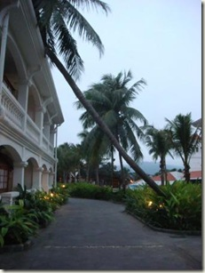
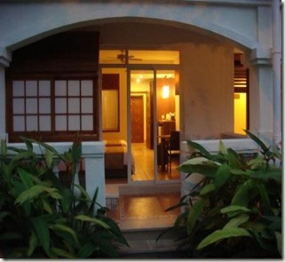
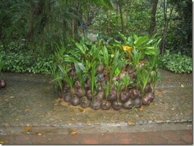
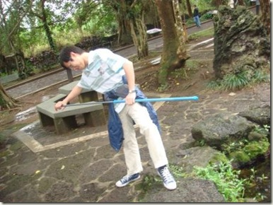
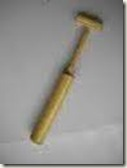

抱怨
明显地，线上线下，大伙抱怨多了——你知道，我说的是房价或者其他类似的东西。那么
1. 是不是我们的状况变差了？
不是。我也经常跟朋友一起抱怨房价，这是一个非常好的社交话题（所以我们一般不一起抱怨别的）。但是，往前再数几年，房价对我们来说，一样是很高，只是当年我们不抱怨。
当然，有种说法，是我们财务稍有好转，才有了抱怨的资格。
2. 是不是我们周边的状况变差了？
不是。北京这几年的城市建设还不错，科教文卫方面有更多的机会和便利，——而这一切，都需要有人来买单。在北京的生活成本，将越来越高，——也不一定是越来越高，只是以前很多东西的价值被严重低估了。
以前大伙不觉得，是因为很多东西没有被纳入实际的或心理的成本核算。你住在医院旁边，即使你现在没有去医院的必要，你还是要为这种（可能的）便利买单，这会体现在你的房租或者房价里面。有的时候，政府来买单，或者上一辈的人，拿青春来买单。
现在，当社会的一些产品、服务、福利或者便利，能用市场价或其他参考价来衡量时，规则相对简单，对年轻人可能会是一件好事。
3. （扯回来，听到这么多和说了这么多抱怨，）是不是因为我们的遭遇就比其他人难？
不是。这里说的是一个代际比较或者人群比较，我们不会比上一辈的人或者社会大部分人的实际苦楚多。
我们抱怨多，大概是因为我们只抱怨自己的这档子事，而且只听到我们自己的这档子事。我同意（而且是在休谟《人性论》哲学的高度上同意），对于自身的痛苦，我们应该赋予稍高的考虑的权重，人的感知系统，就是有这样的放大效应。
问题是，给自己的感受赋予100%的权重，就稍嫌境界不足了。我们自有自己的内心冲突、焦虑和迷茫，但我敢说，这些都不是深刻的，而仅仅是对自己而言比较重的或比较在意的。在情感或情绪上它们理应受到百分百的尊重，但在思考上，它们不应该得到太多的关注。
真实的，但不是深刻的。对物价对房价的抱怨，一点新意都没有。对大部分人来说，对每一代的大部分人来说，置房从来都是一个很大的开销。你说北京前些年房价便宜，四五千曾经，那当时那帮人为什么不都同时购两套（现在就大发了）？当时他们也多是七拼八凑整起来的第一套房，我们也能想像到当时存在的抱怨。现在这行情，房价看着似乎是相对高了，但这也只是程度的差别，没有质的差别。大学毕业后几年就拥有自己的房产，在全世界范围来讲都是一件挺奢侈的事，不用合计，你铁定要为此买单。
有论者曰：小小抱怨啦，我们都是在幽默一把，没必要这么严肃。喏，咱也到了操心房价的年龄，时刻提醒自个一把了，个人不见得就有那么坚强。不知道普鲁斯特在《追忆逝水年华》中是否有这么一句：
我太过沉溺于在实际中达到实质的自我，这徒劳无益。
公车上书（写）
/*一个礼拜断网，找出上周的一篇日记抵数。*/
2010年3月6号，周五
1. 语言
昨晚跟Li一起看单向街图书馆安排的舒国治《理想的下午》新书会的广告，名字比较吸引人，叫“舒国治：一个流浪者的生活及写作——与舒国治共度理想的下午”。这本书刚出，在网店出现还要有几周，就先去卓越看了页样张，我们都第一次听说这个作家：
{kind=link}
Li说读了这样张，没觉得什么。我也说这段不咋的，没有广告词渲染的那般有情调。——一会又想，在感觉上枪毙一段文字很容易，总得给个严肃的理由吧。再读一遍，大概就有些思路形容我们的感觉了。文中的“何其清美”、“何其醇雅适人”、“宁平旷远、潇洒风华”、“闲散逸放”，都是写散文的好词，问题是里面句式不够摇曳多姿，这么密集地排一块，就有点“死”。
有时我会盛赞身边朋友的文字“错落有致”之类。但舒国治是专业或职业作家，标准就不免苛刻些。或者有些偏颇，待过会整本书来看。
2. 音乐
这些天在谷歌音乐上听些古典音乐，是一个网友整理的“古典音乐入门”。我对精细的声音不够敏感，但对嘈杂或者过于直白的调调容忍度又低，对流行的摇滚各系，不管好坏，统统一言以蔽之：“这厮聒噪。”以前跟背课文一样听了两盘乡村音乐选辑，温柔深沉，或有愤慨激越，似乎又有礼约之，——就一直听到现在，而这些就是我所有的积累。在艺术鉴赏方面的笨拙，有时会强烈地刺激自己。
一样不知道如何欣赏古典，但都是赏心悦目那种，几个晚上都一直放着。
3. 咖啡
这几天似乎要养成喝咖啡的习惯。滴滴香浓，意犹未尽，再加上三大勺伴侣，三块方糖，——噫，似乎有助于增肥。
有好事者曰：噫，兄弟喝的不是咖啡，是糖水。然。有科学研究，按这种配方喝咖啡，一年助长十斤。
4. 笔记本
今天起了个早，地铁上就能施施然有个座儿。要是一直站着，我也大为欢喜，随即掏出一本书就可以了（公车上书）。状况不一样，就掣出刚整的HP Mini，随想随写，到亮马桥时便整出这一段文字，——恩，这也可以叫做公车上书，在公车上书写。
新年励志
只要半个平米的价格，日韩新马泰都玩了一圈；一两个平米的价格，欧美列国也回来了；下一步只好策划去埃及南非这些更为神奇的所在……几年下来，全世界你都玩遍，可能还没花完一个厨房的价钱。但是那时候，说不定你的世界观都已经变了。
超级受鼓舞啊。朋友转给我，不知道哪位高人写的。自勉吧。
2010.2.12
临近虎年的年尾，还碰上了件挺不愉快的事儿，而且还不算是小事。好在不幸中有大幸，希望一切能就此妥妥当当地过去。牛年虽然遇到些不顺的事儿，但从虎年的第一天开始，一切都会顺顺利利的。
所谓吃一堑长一智，经过这件事儿之后，还真是想了些事情：
1 做事情一定要谨慎，遇事一定要镇定。从小就听着这样的教育长大，但是真的是直到自己碰到事情才会认真对待。以后也一定要言传身教，好好地教育孩子。小心行得万年船，谨慎并不是万能的，但不谨慎却是万万不能的。为了赶地铁跑快一步，为了赶路闯红灯或是没啥理由闯红灯，背后的危险其实谁都知道，但真的遵守的人又有多少。相反，如果事情一旦发生了，就不应该再去纠结于之前没怎么样怎么样的后悔之中，而应该面对现实，想办法立即着手解决问题。抛开可以向谁求助的逃避想法，勇敢地面对问题，承担责任。这个过程很痛苦，不过真的是自己应该做的。而且，把事情处理好之后，想着自己还没有动用到杀手锏，这种感觉还是挺不错的。
2 人生是很奇怪的，有的时候回过头去想想，好像生活中的每一时刻、每一件事都是为了最后促成那个事情的发生。后悔的时候通常会想，要是之前怎么怎么改变一下，也许结果就不会发生这么倒霉的事儿了。可是人生就是单行线，你永远无法知道如果不这样的话那会是怎样。会是一个更好的结果吗？还是可能会是一个更糟糕的结果？无法比较，因为从来不会有机会。这时候你只好接受：或许这就是命运吧。或许在我右边眼睛皮跳的时候，就注定了会发生这么一件倒霉的事情，如果过程被我改变了，那么这件事情可能就会以另一个方式在另一个人的身上发生，总之一定会和你有关系，因为你确实右边眼睛皮跳了。这时候你最好的态度只能是耸耸肩，说好吧，这就是命运，就该去接受吧。
3 那天在医院急诊室，过一会儿就来了一个大姐，好像是在家摔了一跤，脚踝骨折了，在拍X片的放射室外面等着的时候，看着她一会儿声嘶力竭地嚎啕大哭，对着他丈夫一把鼻涕一把泪地说孩子在家没人带，一会儿马上换了个正常的声调，说没事，大不了我去买付拐，拄着走还不一样，一会儿又歇斯底里地叫医生，喊着我要疼死了，真是让我非常抓狂。急诊室的小护士看起来比我小，我们在门外的时候，她还特别体贴地把急诊室的门关上。过一会儿又拉来一个大妈，满脸都是黑色的，穿着像民工干活儿时的衣服，一直哀嚎着，河南腔，很含糊，我只听得懂“我的青天大老爷”这几个字儿。听说是长年上访的人。她的儿子送她来的，两人红着眼睛互相指责。一会儿警察来了，要录口供，似乎也搞不定。
医院真是个悲惨的地方，警察局估计也好不到哪里去，医生和警察，要么是整天接触血淋淋的人的身体上的病痛，要么是整天接触惨兮兮的人的精神上的扭曲，都是让人无法快乐的行业。因此，我们真的应该对从事这两类职业的人抱有更多的尊敬和体谅。因为他们的工作充满了痛苦，要不是心灵很坚强的人真的接受不了。而我们通常会指责说他们很冷淡，这其实也可以看作是他们自保的一种方式，日日接触悲惨，如果真的还特别悲天悯人，精神肯定会崩溃的。他们真的挺不容易的。
江说，其实每个群体都挺不容易的，现在中国社会最可悲的不是每个群体的不容易，而是每个群体都互相仇视。现在我们提到医生，提到警察，甚至提到教师，脑子里面的第一印象可能都不是正面的。我们都在互相的指责甚至谩骂。这是不正常的。其实人性还是善良的吧，能够帮助别人对很多人来说都是很让人快乐的，然而现在的状况是，大家都明哲保身，个人自扫门前雪，其实可能不是不愿意帮助别人，而是帮助别人的代价太大了，就像彭宇案，让很多人都寒了心。
不管怎么说，这是还算是遇到了好人。希望接下来的一切都顺顺利利的，大家都福气多多吧！
公车上书2010-02
北京地铁十号线，夫子早晚通勤之所。海淀黄庄、知春里、知春路、西土城、牡丹园、健德门、北土城、安贞门、惠新西街、芍药居、太阳宫、三元桥、亮马桥、农业展览馆、团结湖、呼家楼、金台夕照、国贸，凡十七站。张袂成阴，比肩继踵，有朋友曰：“说是坐地铁来的，其实都是站着过来的。虚伪啊。”不过翻书，坐着站着，横竖都一样。
昨天是3月1号，周一，早起来，窗外白茫茫一片，跟新年第一天似的。记录下二月份的地铁书：
1 《有生之年非看不可的1001部电影》（中央编译出版社，2009-12）
{kind=link}
编辑Viking送的书。我拿来是恶补一下。这1001部电影，大多没看过，很有可能也不会去看，但以前看小说介绍也有阅读的乐趣，翻这部精美的书，过个瘾先。
这部书的编者，史蒂文•杰伊•施奈德（Steven Jay Schnei），是个研究恐怖片的专家，这部书也带有他个人偏好，口味重的片子不少。
用的是最好的纸，送去的是最好的印厂，这本书，摆着也舒服。
2. 《万物有灵且美》（中国城市出版社，2010-01）
{kind=link}
作者吉米·哈利（James Herriot），写他二战前夕，作为一名兽医在英国乡间行医的小故事。感受下他的职业乐趣。
3. 《自我认识》（广西师范大学出版社，2001-01）
{kind=link}
作者是苏联的宗教哲学家尼·别尔嘉耶夫（1874-1948）。他说：“我经历了三次战争（其中两次可以称做世界性的）、两次俄国革命（小的和大的），经历了20世纪初的精神文化复兴，以后则是俄国共产主义，世界文化危机，德意志的巨变，法国的崩溃和它的战胜者的占领；我经历了放逐，而且放逐还在继续。我痛苦地体验了反对俄罗斯的可怕战争，我也不知道世界的震荡如何结束。对于哲学来说，经历的事过于多了：我做过四次牢，两次在旧制度下，两次在新制度下；被流放到北方待了三年；险些被永远迁移到西伯利亚；被从自己的祖国驱逐出来，而且我相信，我将在放逐中结束自己的生命。”
别尔嘉耶夫的哲学非常独特。他支持苏联革命，又对其持精神上的批判态度。他是俄罗斯最有名的东正教哲学家，对教会又有非常尖锐的批评。他是一个自由主义者。
4. 《信仰的法则》（中国人民大学出版社，2004-01）
{kind=link}
宗教经济学的纲领之作，强调从社会的角度而不是心理学的角度研究宗教。我们熟悉的诸大家对宗教的评论，大多基于心理学的视角，最有名的当属马克思的鸦片说和弗洛伊德的禁忌说。
5. 《漫歌》（云南人民出版社，1995）
{kind=link}
重读聂鲁达的诗。这书是高二时买的。聂鲁达展望新时期的诗歌时说：
“在2000年，最新鲜的、在任何地方都是最时髦的诗人也许是一个叫荷马的、眼下无人问津的希腊诗人。
我同意上述看法，而且为此我将重读他的诗歌。我要寻求他的遗风，甜蜜而又富有英雄气概，我要寻求他的诅咒和预言，他那大理石的神话和盲人的木杖。”
6. Culture And Customs of France
{kind=link}
法国历史文化风俗。
{kind=link}
《纽约时报》的畅销书。句子都像模像样，有的看上去还挺美，畅销的励志书，毫无逻辑可言，不必较真。一个意思，正着说，反着说，讲个故事再说，反反复复就强调一个东西，——对于英语的初学者，没有比这更适合的材料了。
花菜也分形
{kind=link}
{kind=link}
激动吧？这不是花菜。这是分形花菜，在餐桌上邂逅相逢的分形花菜。上个月去威海参加老宋的婚礼，我作为伴郎，一大早陪新郎官去酒店迎娶新娘。大伙围着老宋，先一起吃些早餐，填填肚子。这天，新郎官自有新郎官的乐趣。
突然，老宋盯着一盘菜说：分形花菜！瞬时间我们就激动起来，站起来，掏出手机，咔嚓嚓先照下来。（画外音）分形是一个数学概念，通俗点说，某个东西的每一个部分都跟整体相似，就叫分形（我们承认，我们都是不可药救的理工男，在一场喜庆的婚礼之前，先为一颗分形的花菜而兴奋），大伙看看下面的图片就有印象了：
{kind=link}
{kind=link}
后来，我就开始了一场寻找分形花菜的历程。后来，在酒店的菜品展示厅，——咚咚咚
{kind=link}
{kind=link}
分形花菜现场版。高中翻《中华读书报》，有一篇北大哲学系刘华杰老师写的一篇文章，专讲哲学系院子里的各种植物，藤藤蔓蔓爬山虎之类的吧（现在没印象了。不过我做剪报了，应该还在屋子的某个角落）。从那篇文章我学到一个词，“手性”，文章讲的是植物的手性，植物茎右螺旋叫做右手性，左螺旋叫做左手性（“手性”这话题，展开来要复杂和有趣的多）。那阵子，正好是我向往北大哲学系的时候，看到一个哲学系的老师这么津津有味地观察院子里的植物，更是心潮澎湃，噫。
分形花菜，俗名宝塔菜，又名罗马花椰菜。
《红楼》梦：这误会大了
我自幼喜读《水许》，里面一条好汉叫李达，手持一对板爷，有万夫不挡之勇。
这几个晚上，有时躺在床上翻《红楼梦》，有问题就询问屋里的专家Li同学。这大概是我第四五次阅读的尝试，老以为读不懂，没意思。这次从最基本的问题开始，一个个向Li发问，终于明白，为啥自个以前没有读懂红楼了——一开始，我就索性有一个大大的误解，以前我一直我以为：
- 神瑛侍者是个女的，（then/and）
- 贾宝玉是石头
各位红楼专家请先纵情大笑吧。这里要明确地说出来，实际上：
- 神瑛侍者是男的，而且就是贾宝玉
- 石头是那块玉
读书不仔细，而且脑中有一股不可磨灭的stereotype，来说说我为什么会以为神瑛侍者是个女的以及（和）贾宝玉是石头。
首先，神瑛侍者这名字，就比较女性化了，加上ta又在赤瑕宫工作，还以甘露灌溉一株叫绛珠草的小小草，大脑就已经把这位定位为女的了。一会又看到ta去警幻仙子那里去挂号备案（挂号费五毛?），为的是凡心偶炽要下凡，——这又似乎是一条证据，要是爷们还费什么心神去挂号，早就拣一座山头落草了，——扯远了，反正一开始认为神瑛侍者是女的，接下来怎么看ta都像是女的。
还有石头，无才补天的石头，也是动了凡心，要去人间去享受一番荣华富贵，和尚道士警告它“乐极悲生，人非物换”。——好吧，这不就是贾宝玉吗？而实际上，神瑛侍者下凡成了贾宝玉，那块石头下凡，成了贾宝玉身上那块通灵宝玉(典型的穿越失败啊)，见证了贾宝玉及其家族的兴衰，并把这段故事写在自己肚皮上，曰《石头记》。
以为贾宝玉是那块石头，问题倒不大，贾宝玉在文学意义上就是那块石头。因为固执地误会了神瑛侍者的性别，所以就很难理解贾宝玉和林黛玉之间的爱情故事，一页一页翻过去，没见他们在谈恋爱啊。据着一部没有男女主人公爱情故事的《红楼梦》，跟人交流就比较困难啦，只好自个再悄悄地翻去，——知道现在才——哦。
威海之行
2010年1月16日，劲杉与桃子大喜之日，跑到威海去参加他们的婚礼。威海大雪初霁，海、天、雪都特别美，只是路有点脏脏的。
婚礼，总是让人很开心，很振奋的啦，祝他们白头偕老，永结同心啦！
话说这趟威海之行，除了婚礼的喜悦之外呢，还见识到了当地的很多婚俗，以及，目前为止见过的最大的馒头，请看：
{kind=link}
{kind=link}
第一个寓意龙凤呈祥，第二个寓意年年有余，真的是面做的哦，颠覆你的传统馒头观吧？呵呵，我见到的时候是着实吃了一大惊啊。颜色非常显眼漂亮，而且做的很精致，年年有余那个上的喜字的边，有好多层呢。话说这两个馒头，不只美观，而且结实，而且，还真的可以用来吃的哦。呵呵，我觉得可以评吉尼斯了。
去威海嘛，免不了要吃海鲜的喔，尤其是对我这个馋猫来说。而且，寒冷水域里的海鲜据说要比温暖的水域里的更味美。在威海已经是吃了好些，婚宴时还碰到劲杉的一位同学。都是年轻人，和J做的也都算是同行，特别热心地带我们去威海的海鲜市场。于是，我们就拎着十斤的泡沫塑料盒子，回北京了。
买的都是实惠东西，也都是我爱吃的，show一下吧：
{kind=link}
{kind=link}
{kind=link}
{kind=link}
{kind=link}
{kind=link}
分别是扇贝、海瓜子儿、沙蛤、花蛤、海螺和毗管梢。前面几样都常见，最后一个比较奇怪一点吧。我上网搜“毗管梢的做法“，竟然还没有。现在还冻在冰箱里呢。鉴于它长得比较像鱿鱼，只是个头比较小，我决定按韩式炒鱿鱼的办法烧它，下回去超市买点韩国辣酱，嘻嘻。看，这就是一只毗管梢的样子：
{kind=link}
话说海鲜我很爱吃，可是保存真的很麻烦。这些东西，吃的就是新鲜。从威海回来到现在，今天才恢复自由，之前设想的呼朋引伴共同烹海鲜，实际却只能焦头烂额独自熬通宵。这些东西又不忍心让它坏掉，于是在回来的当天晚上消灭大量花蛤，第二天送给同事一半东东之后，第二天的晚上，我和J集中力量把它们都消灭了（除掉毗管梢），几乎恶战到凌晨，直吃得肚圆脑满，几近麻木。每样都好美味啊：
{kind=link}
{kind=link}
{kind=link}
分别是辣炒花蛤，爆炒海瓜子儿，粉丝蒸扇贝。以前花蛤吃得比较多，这次在威海朋友的推荐下，买了些沙蛤，原来沙蛤那么美味。沙蛤是做汤的佳品，但是这次因为怕不新鲜，后来也像花蛤一样辣炒了，以后一定试试做丝瓜沙蛤汤。海瓜子儿常听，却还真是第一次吃，因为小，本身也比较干净，挑剔蛤蜊类一坨脏东西的人吃海瓜子就不用担心了。炒熟了，就会露出一些小尖尖，露出的部分有点脆，里面的部分超级嫩，用舌尖揪出来，真是好美味啊。扇贝收拾起来就比较麻烦了。通常这个东西除了黑黑的那坨之外都能吃，但据说讲究的吃法是就留中间那块白色的肉和黄。我们愁着吃不完坏掉呢，自然就选择讲究的吃法了，呵呵。这次做了剁椒和老干妈酱两个口味的。海螺不知道是不是生命力脆弱一些，炒熟了之后发现不太新鲜了，就没吃。可惜呀。
做法下次专文补上吧。快乐美味的威海之行，哈哈。
办公室有鬼·幸福里·小感
托同事的福，今天拿到赠票去看了《办公室有鬼2-谈谈情跳跳槽》，戏很好，很有笑点，演员也都不错，还参与了一把，开心！配合着这几天的心情，想了些东西：
1. 能自然地表达自己的感情是一种幸福。戏快结束的时候，有一个邀请四位观众上台做个小游戏的环节，我一开始没举手。想了想，还是高高地举了手，不过主持的人已经转到旁边的观众席了，于是我自己走了上去。场上气氛很好，我也很开心，为什么不参与一把呢。玩的是什么并不重要，拿到的小礼品是什么也不重要，重要的是我想参与，于是我就去参与了。呵呵，这种感觉真的很好。生活中，我们很可能因为羞涩、尴尬或种种顾虑，不敢表达自己的感情，不敢表达对别人的关心，或者，即使表达了，也是不自然的，扭曲的方式。认清自己的感情，大方自然地表达自己，我觉得，会让自己和对方都很舒服。
如果真的是自己想要的，就去争取。不要等着别人来选你。如果真的想，就把主动权掌握在自己手中。我想参与那个活动，即使那个主持人没有点我，我也走上去了，again，这种感觉真的很好，呵呵。因为以前有过遗憾，不想再让这种场景重复。
2. 多去碰触和了解外面的世界，不要把自己局限在自我的世界里面。J以前说过，如果我们对其他人，对外面的世界有更多的了解，我们就会知道，我们经历的快乐可以和很多人分享，我们的感受有很多人能明白，我们的困惑和挫折其他人也在面对。这样，我们就不会觉得自己那么孤独，在看待自己时，会有更多的洒脱和释怀，对待别人，也会有更多的宽容和大度。
我曾经为房子深深地纠结过。像所有期待美好生活的女孩子一样，梦想着有自己的房子，装饰得漂亮而舒适，希望可以和爱的人在里面筑巢，享受自己的生活。北京房价的离谱涨速，让我离这个梦想越来越远。也曾经失落、沮丧、坏脾气。可是今天我才真正切实地体会到，这是我们这一代的年轻人都在面临的问题，即使是对买了房的人来说。今天的戏里面，有一段川子的演唱，关于幸福里的，那么朴实的歌词，让我很受触动，拿出相机来拍了一小段录像。在他唱到“我买不起”那句的时候，现场突然爆发出雷鸣般的掌声。这齐刷刷的的掌声中有太多的含义，也让我突然觉得一下子放松了，没什么委屈了。你以为是你一个人在受苦吗？你以为只有你一个人在努力吗？你以为只有你一个人觉得不公平吗？
碰触外面的世界，还可以让我避开个人的无所事事和自怨自艾，外界新鲜的事物让我们可以拒绝日日的重复和无聊，让我们去思考，去感受，去为更大范围的人快乐和悲伤。
3. 充实自己，提升自己，投资自己。我们去追逐房子、车子和其他的物质，不是因为我们喜欢追逐物质，而是希望通过这些让自己活得更有安全感，不是因为我们喜欢束缚和重压，而是希望通过这些让自己在面对这个世界的时候有更多的坦然和自信，更少地受到牵绊，更多地享受自由。可是，这个世界上，真正能让我更加自由和自主的方式，只能是我自己更加强大和自信。所有外在于我的东西，都可能被外力剥夺。但是我自己，我的能力，我的技术，我的自信，这些才是防身利器，都是永远不被剥夺的资本，只有它们，才能让我在面对这个世界时，更加洒脱和自由。如果投资房子只会带来更大的束缚和负担，那么我为什么不投资自己，让自己更加强大呢。
世界上的工作千千万万种，确实有一些，会比另外一些，纯粹因为工作性质的关系，更多地激发人的活力和创造性，更少地让人觉得无聊烦闷，更少地激发人性中的猜疑、嫉妒、攀比等不好的方面。今天回家已经很晚了，地铁口安检的也只剩一个小伙子，对着三星的液晶显示屏打瞌睡。没有主机，三星的显示器也不能上网。接通的是安检仪器，三星的显示器里能看到的，也只有无聊的灰色图片而已，日日重复。真的碰到带违规物品的概率，不会高到10%吧，所以他的工作基本上也没什么成就感。这份工作应该很无聊吧。如果我们有能力，就要让自己的工作和生活，离这种无聊、机械重复、条条框框越远越好，让自己的活力和创造力离开放的环境越近越好，让自己的自我发展得越充分越好，让我们对生命的感受越丰富越好。这一切，都有赖于我们自身的强大。
4. 关于对待别人。我通常会被认为是很有礼貌的，有时候甚至过于客气。但是，如果我有道理而对方没有道理时，我通常会被认为，不能很好地表达自己的有利立场，不能有效地抓住机会控制对方，过于温和。我一直为此烦恼，因为这在工作中不被视为是美德。但是今天，我想通了。我可能不会用充满含义的话警醒对方，但是我仍然会向对方传达清楚，你的行为是不当的，我温和不意味着我麻木。如果对方能够明白，ok，继续沟通没有问题。但是，如果你认为我温和就代表着傻，代表着可以欺负，那么，好，我不跟你玩儿了。在我不喜欢的场合，面对不喜欢的言论甚至是不善意的言论，我不善于反击。我曾为此怪自己，为什么只是沉默。可能这说明我不善于变通，但是没关系，这种场合我不喜欢，我也不想参与，所以我沉默。沉默可能很被动，但是沉默仍然是一种态度——我不玩儿了。其实，这不也挺好的嘛，有什么不好呢，为什么要怪自己呢。
5. 最近感觉对自己的生活可以更好地应对，很开心。下午去西图办武国忠的活动，还算挺顺利的吧，沟通能力没问题。昨天主家问翻译做的怎么样了，坦然地说，还没开始呢。换作以前，我肯定会回答说，哦，已经做了一部分了，然后加班熬夜做出来给对方。生活中，没必要为了对方的要求掩饰，委屈自己。我答应的事，我全力做到，没有答应，没有事先协调的事，没必要应承下来，然后苦哈哈地去满足对方的要求。对方能理解，呵呵，碰到好同志了。对方不理解，或者还非要指责，下次不跟他玩儿了。呵呵。稿子那边呢，师姐也很放心，看我实在很辛苦，说以后只给我小部头、内容比较好的稿子。多好啊！呵呵，我努力了，对方信任我了，就会为我考虑。认真地干活儿，坦诚地交流，信任对方，就会获得对方的信任和支持。不支持的？还是那句话呗，下次不跟他玩儿了！
6. 这些天，慢慢地，越来越强烈地感觉到自己在变得更加洒脱和积极。去看戏的路上，非常非常巧地遇到了雨阳，好久不见的本科同学。然后她突然就说起，觉得10年寡妇年很没道理，专家还说了，真从风水上讲，10年是金虎呢，大吉大利。呵呵，突然就心情很好，突然就不纠结了。顺应自己的节奏不好吗？管它那么多呢。如果有能力抚养的话，为什么不要两个宝宝呢，一男一女最好了。上学问题？户口问题？那么多年以后的问题现在就愁？也太累了吧？而且，只要他们爸妈很强大，他们也就少很多束缚啊，不是吗？现在买不起房子？房价还是会一直涨？为什么不努力让自己增值呢？让自己增值的速度超过房子增值的速度，不就会越来越轻松吗？
7. 10年的我，10年的我们应该会有不少好事儿吧，呵呵，充满了期待哦，迎接2010。
{kind=link}
外面的世界
曾经沧海难为水，
除却巫山不是云。
取次花丛懒回顾，
半缘修道半缘君。
从威海回来。14号在飞机上翻报纸，《参考消息》和《环球时报》，头条都是google可能离开中国的新闻。过了几天没有网络的生活，回来开机第一件事情就是把gmail给备份了。单纯讲，google离开中国，无非是google.cn的关掉，并不会影响我们的上网体验，只是这背后凸显的互联网环境，隐隐有些秋意。
有一句诗说，经历过无比深广的沧海的人，别处的水再难以吸引他，除了云蒸霞蔚的巫山之云，别处的云都黯然失色。google的产品，就是这样提升了国人上网的层次，并且没有替代品。
大脑缺氧
明天与Li去威海。10号从海口回来，先贴些图了。知道为什么在北京，有时睡足8个小时还是精神不振，原来都大脑缺氧的缘故。岛上树多风足，含氧量高，一晚6小时的睡眠，质量都好过这里。北京，特别是冬天，窗子又关得严实，——只能继续忍了。
1月6号。下午跑到海口机场。火速把羽绒服打包，深吸一下海岛的空气，心里老念着北京的大雪寒风。晚上在海口的康年皇冠花园酒店住下。
客房能看见金牛湖。在酒店吃的晚餐，无非是文昌鸡之类（我们是北佬），又跟朋友们一起穿过金牛湖公园，逛几条街，找几个椰子芒果。
1月7号。上午公干，下午公干。过来不是玩的，也不是打酱油的，开会开会：
{kind=link}
中午还是在酒店，晚上一起吃南庄海鲜，据说这是一家海南人吃海鲜以及摆婚宴的传统酒店——现场我就碰上了两对。其中一对，女方叫××男，——导游说，海南风俗如此，重男轻女的习气还是有残留。
晚上看张艺谋全国巡演的“印象”系列，“印象·海南岛”，主题是阳光沙滩泳装秀。剧场在海口的西海岸。据现场几位男士的意见，要表现沙滩美女的海南风情，那些女演员的年龄还是嫌小些，建议用熟女代替；当晚有些小雨，看着泳装出场的女演员，都要担心她们会不会着凉（背景的海是真正的海）：
{kind=link}
1月8号。上午接着开会，不谈。下午转去博鳌，在玉带滩待会。玉带滩处于万泉河的入海口，刚好把这河跟海给分离出来，导游说“进一步波涛滚滚，退一步湖光山色”的正是。皮鞋西裤过去的，见了沙滩海浪，把鞋子打包就跑：
{kind=link}
博鳌这小镇，真的像一只小乌龟的样子。
晚上住兴隆康乐园。一个度假村，随处可见露天的游泳池和温泉池，可惜一天都有小雨，不敢下水。
这里住得比较光鲜，两层的小楼，在一层带小阳台那种，不过吃的自助餐实在一般，想康年的自助早餐真是不错。
|  |  |
{kind=link}
{kind=link}
1月9号。上午还在兴隆，海南的热带植物园，看些热带植物，香草、咖啡、可可、榴莲之类，大冬天的，真够茂盛。这是椰子，椰子球掉地上就要长成椰子树了：
这是某种水果：
{kind=link}
{kind=link}
中午赶到琼海，万泉河，漂流。下午转去火山公园，晚上回海口康年。
1月10号。机场。
|  |  |
{kind=link}
在万泉河买回一只水枪，筒状，打气筒的样子（上左），不过立起来还挺像一个手杖。小时候自己做过，不过功率小多了，就像带回北京，跑玉渊潭划船时用。
托运之，被拒。又捡起来闯安检口，拄在地上，就像让安保认为这就是一只手杖。把手机钱包之类取下，安保曰：请把水枪拿上来。晕。
技术博客展望
北京终于下了一场像样的雪，算是跟南方同步。早上起来，吟诗一首：
雪，好大的雪啊，洁白的雪，
银子一样的雪。
嗯，这不是银子。
要是银子，早被巴依老爷给抢掉了。
雪，好大的雪啊，洁白的雪，
面粉一样的雪。
嗯，这不是面粉。
要是面粉，早被巴依老爷给吃掉了。
沉吟至今，才想到以前还有个月亮版本，真斯文扫大街，不提。
终于把以前在windows live space的所谓技术博客鼓捣到自己的名下：
简陋戏台搭好，就鼓励自个以后多写些技术文章了。我跟Li的生活博客合集，当然还是会这里，
所谓技术博客，无非是自个的一些读书笔记技术心得之类。这新得白花花扎眼的一年，还想多写些关于SAS程序员本身的文字，关于这个职业，它依托的行业环境等等。SAS程序员在国内还不是一个很兴盛的职业。
还会有关于SAS本身的文字，关于SAS语言，SAS公司，关于它的创始人等等。最近我对SAS的创始人Tony Barr比较感兴趣。
技术本身，这个跟饭碗相关，除了SAS技术，很多笔墨可能会停留在CDISC上面。当然还会有自个兴之所至的其他文字，才年初呢，啥都没定。作为跟“统计之都”的约定，所有跟统计相关的文字，我会首先发布到“统计之都”，然后在自个的博客做个备份：
这2010年的第一场雪，可以摇头晃脑吟诵一番张打油先生的著名诗作，《咏雪》：
江上一笼统，
井上黑窟窿。
黄狗身上白，
白狗身上肿。
噫。
看图说话：2010年第一课
英国老牌杂志《经济学家》(economist.com)，前些日子（去年年底）给了一副令人印象深刻的图表，说中国将于2010年超过日本，成为世界第二大经济体(以美国作为基数):
{kind=link}
- 日本的高峰时期，1995年，其GDP相当于七成多的美国。
- 2009年，日本跌回他们1985年的水平。
- 日本是1989年泡沫开始崩溃的。1989到2009，日本民众为他们自身以及政客、银行家的错误，至少花了20年的时间来买单。
- 承受了20年衰败的民族，仍然屹立不倒，并一直是世界第二大经济体。中国不可以，美国也不可以。
- 日本的80后90后，他们没有父辈对曾经辉煌的记忆。他们会有怎么样一个心态？
- 改革开放以来，中国有着持续稳定的经济增长。什么是基本面？这是基本面。
- 东海之水化为田，北溟之鱼飞上天。 城有时而复，陵有时而迁。
国家兴衰，个人沉浮，在我们这辈子中，可能就要碰上这么一个大的拐点，那绝非是股市的三五年的周期。
WANTED: SAS程序员、数据分析师
是几个公司的职位，地点北京，全职或实习生，我可以帮着中间撮合一下：
- 数据分析师，强调数理背景，初级或者高级。
- SAS程序员，这个要比较靠谱的，不仅仅是会套用几个proc。
工作描述就不摆出来了，是医药/IT金融行业。感兴趣的朋友给我打电话或者发邮件，我们还可以顺便聊聊。
冬天的节气
12月25号，今天，圣诞
早上起来，慷慨作歌，命自个舞于Li前，曰：
一日无事。
12月22号，冬至
高中同学童童从上海过来，叫上在京的另两位同学，老何与小颖，一起在宣武凑凑。
童在上海搞证券，老何做地产顾问，小颖同学是京报记者，寒暄一阵，一桌的话题就转到房地产与宏观经济形势去了。没有地产与经济、时事专家在场，现在同学聚一起的话题还它，噫。这是永恒的话题，它困扰着我的研究生同学，困扰着我的大学同学，困扰着我的中学同学，——还好，它还没有困扰到我的小学同学。
宣武是我去年的主场，一路见些以前的同事。我们在庄胜吃饭，大朱从杭州给我拨个电话，我颇为兴奋，说：我现在庄胜五层的山西馆呢。恩，这是我们以前工作餐的地方。
12.25清晨好梦
今天一早从巨甜美的梦中醒过来，眼角眉梢都开放着笑意。为啥？因为梦中的我是一个小国家的太子妃（呵呵我真不知道为啥会做这种梦），太子爱，公婆疼，已经钦准还未办大婚的准太子妃。呵呵
梦一开始，就是王子要带我去参加一个非正式的舞会。我不知做什么折腾到好晚（好像是因为工作？如果是的话，那要么是我很独立，要么就证明这还真是个小国家，嘻嘻），然后赶紧穿上礼服，妆也来不及画，就急匆匆地赶过去了。
刚进会所，管家A（女，大妈的年纪）迎过来说，王子一直在等你呢。
正说着，王子走了出来，冲管家笑了一下，就把我拖进一间包厢里。
（我梦中的王子，个子不高，皮肤比较白，不是我喜欢的那种帅气的样子，不过风度翩翩，气势非凡。）
他的几个死党和另一位管家B（男，大叔的年纪）都在那儿呢。他问我：怎么这么晚才来？我这才意识到自己肯定是迟到了。管家帮我接话：工作脱不开手吧？我只好笑着低下了头。听见王子对管家说：赶紧叫C过来帮她做下头发。然后他凑到我耳边：首饰也都忘了吧？我一摸脖子，唉，项链、耳环什么都忘了（突然有个小念头，是放在桃子家了，嘻嘻，桃子看到这儿肯定要笑死了）。我特别抱歉地抬头看着他，然后他对其中一个死党G说：让D把她的拿过来吧。（仿佛这个D是G的女友），语气温和，却很霸道。我刚想反对，但是看到他的眼神，就说不出来了。
于是，我就坐在梳妆台前，开始被折腾着弄头发。他偶尔会走过来，在我耳边说话，我能清晰地感觉到那种湿润的气息。
头发做好后，C出去了，我才发现，包厢里就我们两个了。我心里仿佛明白，头发做好了，就要出去在那些王公大臣和衣香鬓影前与王子共舞了，可能这是头一次吧，我有些紧张，心扑扑地跳。他走过来，拉我坐在他膝上，温柔地看着我，然后说：我去趟洗手间，你呢？（他知道我一紧张就想上洗手间？）我很不好意思地点点头，于是他拉着我，穿过走道，去包厢的另一头。他的一个死党F等在门口，看见我们，笑着说：“E在里头呢。”（这个E仿佛是有个怪癖，他上洗手间的时候整个洗手间里面只能是他一个人。）王子笑笑，拉着我走到F前面，我往回拉他，说：我们也要排队的。他无奈地笑了笑，跟着我站回F身后，F咧开嘴笑了，一副坏坏的样子。
……
如果不是被叫醒，我的梦应该还会继续吧，王子带着我在众人面前共舞，会是怎样一个场景呢？
真是难得的清晰又明朗的梦。梦中的王子，就是J的样子，他凑在我耳边说的话，他温柔的方式，体贴和爱护，就是生活中的J。
梦中的他和我，在王家相遇。清晨起床后的他，竟然用圣诞歌的调子对我唱：叮叮当，叮叮当，穷得响叮当。让我又是乐，又是恼。
我的勇气就是找到你
{kind=link}
这是一本怀旧而让人充满勇气的书。
当我读到书中的文字时，深深为作者的真诚而惊讶。它不同于卢梭那种忏悔式的真诚，那种真诚本身是带有预期的，它知道它能呼唤起读者的谅解。而本书中的这种真诚，是一种完全面对自我时的真诚，它所首先欲求的，或者可以说唯一欲求的，不是读者的理解，而是作者内心的表达与安宁，这使得书中的文字就是一些只为自己而写的文字，没有发表的意图，没有迎合读者的意愿，甚至没有要获得认可的念头。它使得本书的文字显示出一种超乎寻常的纯净质地。
作者的叙述缓慢而宁静，文字淡定而朴实，让你不由地放慢阅读的速度。开始，你会疑惑，不知道作者要讲述的是怎样一个故事，而一旦你的眼睛适应了叙述的节奏，你的心也会变得安静起来。你会发现，这些人，这些事，都似曾相识。爸妈的同事、你的邻居、你的同学伙伴儿，或者你从父母口中听到的上一辈的遭际，书中的故事都带有温暖的熟悉的气息。对于从小城出来的人，或许更是如此。于是，你开始明白，这些文字，对作者而言，是一次意义重大的回顾之旅。
这是一个凡事都要说服自己的执拗的女人。通过回到她的过去，描述她的童年，来回答自己的困惑，通过回顾过去来正视现在，来续接一段因为伤痛而刻意遗忘的经历。“我始终在找，在找一种联系，一道能够贯穿生命的桥梁”。
明白何所来，方能知道何所往。
借助文字的确定性，她开始了解自己来自怎样一个地方，那个地方有些什么人，发生过些什么事，因此她的笔便不再局限于自己的家人，而扩大到她生活的那个小天地。如果说本书真的有那么一点小小的野心的话，也就体现在这里。这让作者的视野与文字，让跃出了家庭的目光，落到了那个在孩童眼里足以成为一个世界的集体——园艺站。她小时候见过的听说过的人，各自有他们自己的故事，而这一个个故事汇集起来，那个时代的烙印便会慢慢的、不可阻挡地清晰起来。
通过对一段生活——那是她父母的时代和她的童年——的回顾，她开始理解自己的父亲，理解自己。于是她笔下的父亲，带着岁月的美好，定格：“他头发开始变白，而笑容却逐渐绽开。他温和地看着我们，看着土地。他所赋予土地的有很多，同样，土地也回报了他。你可以看到父亲宁静的神态，看到一种释然的表情。他的身影开始随着江河山水一起回转，时光无限。只要你笑啊，土地就变得美好，树苗就在风中歌唱。”
忧伤而质朴的文字，一直包裹在温暖的气息里。连同那些明媚的插画，让我的内心也充满了勇气。我知道，那是关于：
生活、自我、内心的从容与安宁。
当然，还有永不止歇的追寻。
冬至诞生的小生命
fang的宝宝昨天晚上7点半左右诞生了！是个小子。
第一次感觉到一个新的小生命离我是那么近。第一次怀着喜悦的心情去医院。第一次看到刚刚出生的小baby。小家伙整个都红红的，肿着两只像核桃似的眼睛，响亮地哭着，宣布他饿了。
外婆和爸爸都笑得合不拢嘴，趟在病床上的fang嘴唇很白，不过精神还不错，她说痛极了，这可一点都没吓到huiyun和我，呵呵
小家伙从一开始就特别乖，没让他妈受什么苦。检查一直很好，也没什么孕期反应，这次也是，刚进产房，才半个小时，就顺顺当当地来到了世界上。也就是huiyun和我刚进面馆到坐上车的时间，用huiyun的话说：“我们才吃了碗面，小家伙就出来了。”
时间过得真快呀，还记得大一刚来，连男生都不敢谈的我们，现在却已经是为人母的年纪了。下一代的宝宝们就要陆陆续续地到来，然后茁壮成长了！
2009年的冬至，多好的日子！
技术博客开张
这一打折，铁打的汉子也扛不住。域名厂商Godaddy现在推出一个.com域名0.99美刀一年（原价10美刀）的促销活动（国内的.cn域名不好弄了），手痒，赶紧注册了一个（促销码 BUYCOM99 ），以后就当门面使了：
又开出一个英文技术博客，
把以前在blogger的文章都盘过来了。过些日子再开通中文技术博客，以前在windows live space的博客就关了。激励自己勤读书，多写字了。摊开一张空白纸，接下来就会想涂些东西。
个人主页，就是改革开放的窗口，今天着急懒得整，这界面，完全抄袭了FreeWheel的朋友Bloom的网页。他是做导弹的，我是卖茶叶蛋的，这商标一样，侵权也大概不会很严重。有朋友看不过去了，赶紧过来伸一援手。
这个http://li-and-jiang.com/blog/，仍然作为我跟Li的生活博客。生活与技术的分离，一直是我两分法哲学的一部分。